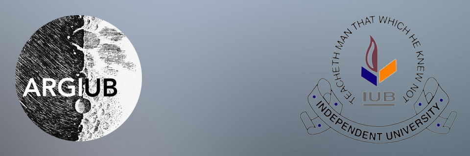

About Me

Education:
Bachelor of Science (B.Sc.) in Biochemistry and Biotechnology, Independent University, Bangladesh
Research Interests:Astrostatistics, Biostatistics, Statistical Inference
Education:
Bachelor of Science (B.Sc.) in Biochemistry and Biotechnology, Independent University, Bangladesh
Research Interests:Astrostatistics, Biostatistics, Statistical Inference

Project Title
Characterizing primary beams of radio astronomy antennas using astronomical observations and modern statistical techniques.
Researcher:

Outreach:
Email:Sudeeepto@gmail.com